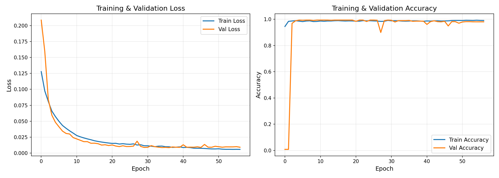
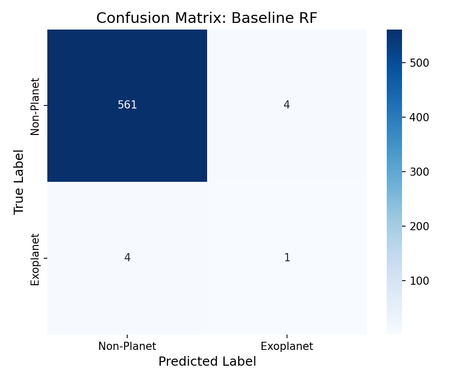
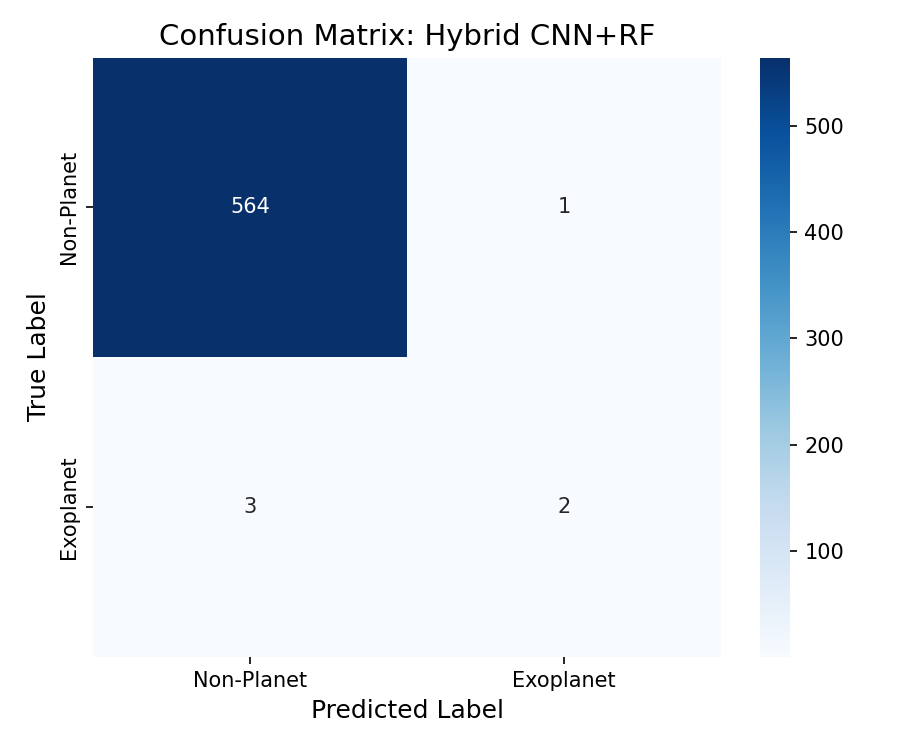
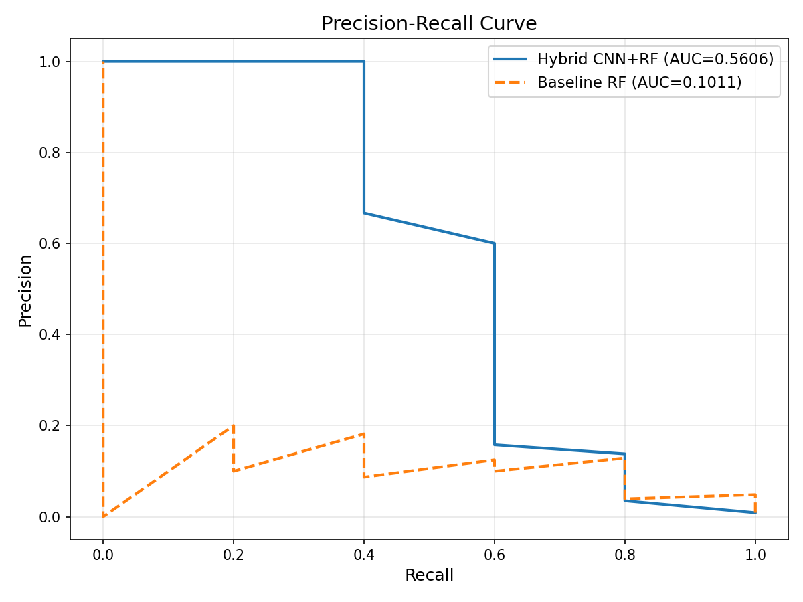
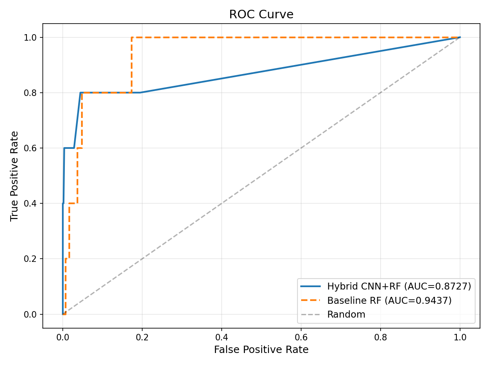
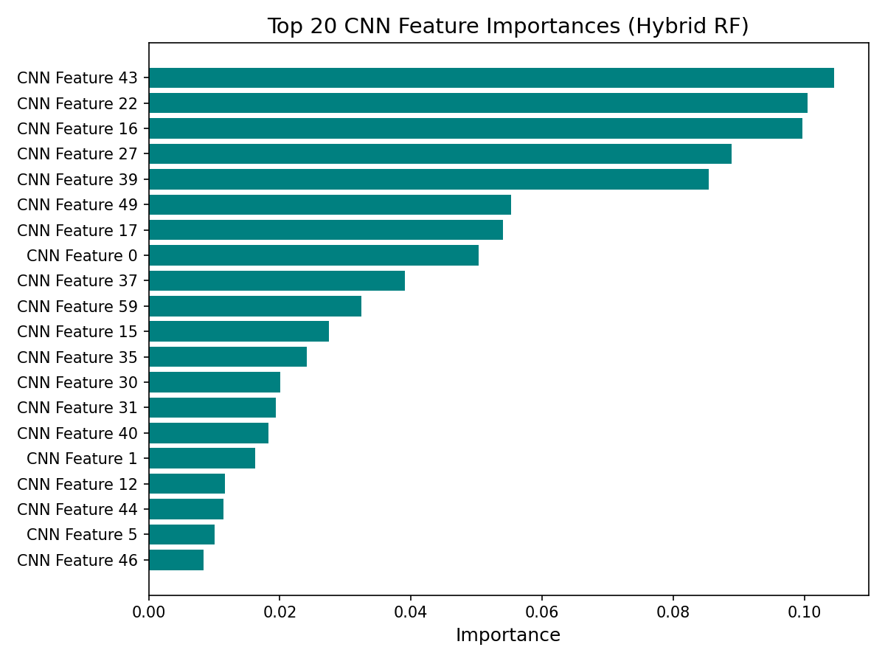
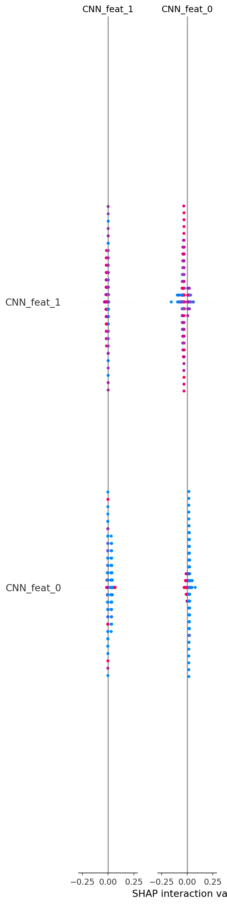
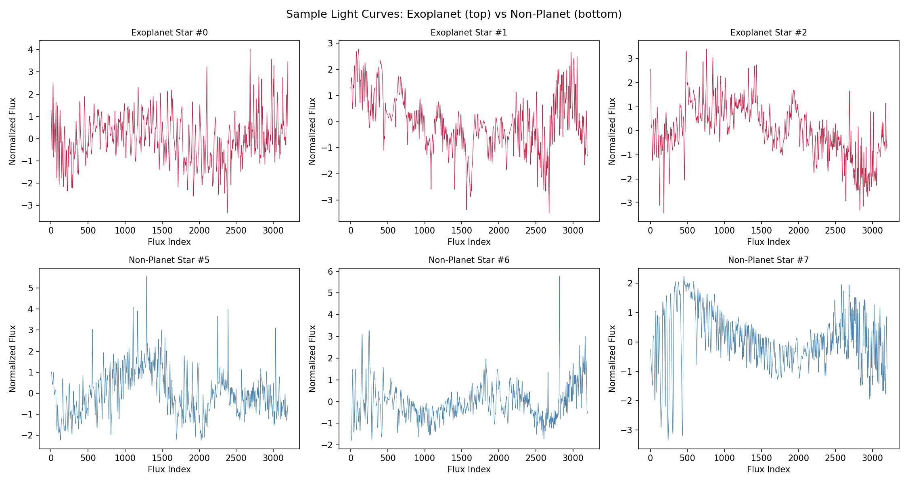

A 1D CNN learns transit patterns from Kepler light curves, then a Random Forest classifies the deep features — with SHAP explainability and comprehensive evaluation.

Train vs. Validation — monitoring val_loss for early stopping
| Fold | Precision | Recall | F1-Score | PR-AUC | ROC-AUC | MCC |
|---|---|---|---|---|---|---|
| Fold 1 | 0.1667 | 0.3333 | 0.2222 | 0.1438 | 0.8852 | 0.2283 |
| Fold 2 | 0.1250 | 0.1667 | 0.1429 | 0.0535 | 0.8524 | 0.1374 |
| Fold 3 | 0.2778 | 0.7143 | 0.4000 | 0.2049 | 0.9840 | 0.4388 |
| Fold 4 | 0.4286 | 0.5000 | 0.4615 | 0.2325 | 0.9858 | 0.4589 |
| Fold 5 | 0.7500 | 0.5000 | 0.6000 | 0.5367 | 0.9788 | 0.6102 |
| Metric | Baseline RF (Raw Flux) | Hybrid CNN+RF (Deep Features) |
|---|---|---|
| Precision | 0.2000 | 0.6667 |
| Recall | 0.2000 | 0.4000 |
| F1-Score | 0.2000 | 0.5000 |
| PR-AUC | 0.1011 | 0.5606 |
| ROC-AUC | 0.9437 | 0.8727 |
| MCC | 0.1929 | 0.5132 |
| Accuracy | 0.9860 | 0.9930 |
precision recall f1-score support
Non-Planet 0.99 0.99 0.99 565
Exoplanet 0.20 0.20 0.20 5
accuracy 0.99 570
macro avg 0.60 0.60 0.60 570
weighted avg 0.99 0.99 0.99 570
precision recall f1-score support
Non-Planet 0.99 1.00 1.00 565
Exoplanet 0.67 0.40 0.50 5
accuracy 0.99 570
macro avg 0.83 0.70 0.75 570
weighted avg 0.99 0.99 0.99 570

Baseline RF

Hybrid CNN+RF

Hybrid (solid) vs Baseline (dashed)

Hybrid (solid) vs Baseline (dashed) vs Random (diagonal)

Which CNN features matter most for classification

Feature contributions: red = pushes prediction towards exoplanet

Exoplanets (top row) vs Non-planets (bottom row)